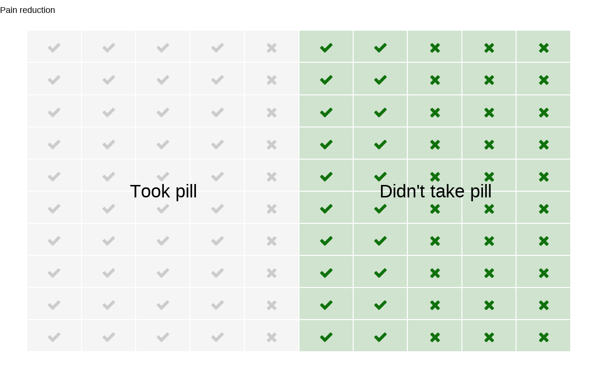

Lernziele
In diesem Modul lernen Sie:
was unter Ursache und Wirkung verstanden werden kann;
die Grundlagen von kausalen Graphen: was ein Pfeil aussagt;
was Eltern und Kinder sind;
was unter einem Kausalen Modell verstanden werden kann;
den Unterschied zwischen Beobachten und Handeln im Kontext kausaler Inferenz.
Ursache und Wirkung
Seit Urzeiten machen Menschen sich Gedanken über Ursache und Wirkung. Nicht nur in der Philosophie, sondern auch ganz praktisch, im täglichen Leben:
Wenn ich die Tablette nehme, gehen die Schmerzen dann weg?
Führt Werbung zu mehr Umsatz?
Lohnt es sich finanziell, an einer Fortbildung teilzunehmen?
Dabei können wir entweder die Tablette nehmen – oder nicht; die Schmerzen können weggehen, oder nicht. Unternehmen können den Werbeetat erhöhen oder verringern; der Umsatz kann um beliebige Beträge steigen oder sinken. Sie nehmen an der Fortbildung teil oder nicht; Ihr Gehalt kann steigen – oder (leider) nicht.
Hier können also unterschiedliche Werte vorliegen, beispielsweise Ja oder Nein (z.B. Einnahme von Tabletten, Schmerzrückgang) oder \(0\) € oder \(1000\) € (z.B. Umsatzänderung, Gehaltsanstieg).
Diese Werte können mit unterschiedlichen Wahrscheinlichkeiten auftreten, welche mit \(Pr\) abgekürzt werden (englisch für probability, Wahrscheinlichkeit). \(Pr(\text{Tablette})\) bezeichnet also die Wahrscheinlichkeit, dass von einer Person eine Tablette genommen wird, \(Pr(\text{Schmerzrückgang})\) die Wahrscheinlichkeit, dass die Schmerzen zurückgehen.
Tablette und Schmerzrückgang
Schauen wir mal, ob die Tablette hilft!

Quelle: https://pixabay.com/illustrations/jar-pills-medicine-bottle-2338584/
Nehmen Sie die Tablette?
Klicken Sie einen der Buttons. Versuchen Sie es ruhig mehrmals!
Auf einer abstrakteren Ebene können die untersuchten Eigenschaften von oben als Variablen aufgefasst werden, also z. B.
\(X\): Tabletteneinnahme Ja oder Nein.
\(Y\): Schmerzrückgang Ja oder Nein.
Die sogenannte Verteilung der Variablen beschreibt die Wahrscheinlichkeit, mit der die jeweiligen Werte auftreten.
Eine Variable \(X\) heißt hier Ursache von \(Y\), wenn der Wert der Wirkung \(Y\) von \(X\) verändert wird, also wenn \(Y\) von \(X\) abhängt.
Wenn Sie eben mehrfach die Tablette genommen haben – oder nicht genommen haben – dann konnten Sie beobachten, dass die Tablette häufig zu einer Schmerzreduktion führte, aber nicht immer. Und manchmal sind die Schmerzen zurückgegangen, obwohl Sie keine Tablette genommen haben. Die (hinterlegten) Wahrscheinlichkeiten dabei waren:
\(Pr(\text{Schmerzrückgang, wenn Tablette eingenommen})=0.8=80\%\)
und damit: \(Pr(\text{Kein Schmerzrückgang, wenn Tablette eingenommen})=1-0.8=0.2=20\%\)\(Pr(\text{Schmerzrückgang, wenn keine Tablette eingenommen})=0.4=40\%\)
und damit: \(Pr(\text{Kein Schmerzrückgang, wenn keine Tablette eingenommen})=1-0.4=0.6=60\%\)
Als Wahrscheinlichkeitsbaum dargestellt, wobei wir annehmen, dass die Hälfte der Personen eine Tablette nimmt:

Kausales Diagramm
Man könnte auch sagen, dass die Verteilung von \(Y\) (Schmerzrückgang) auf \(X\) (Tabletteneinnahme) hört. Dieser Umstand lässt sich auch graphisch darstellen:
In einem solchen Graphen sind die Variablen
\(\color{green}{X} \rightarrow
\color{blue}{Y}\) bedeutet aber auch, dass der Wert von \(\color{green}{X}\) nicht kausal vom Wert
von \(\color{blue}{Y}\) abhängt. Ein
möglicher
Quelle: https://pixabay.com/illustrations/switch-lightbulb-idea-inspiration-4539115/
Kinder und Eltern
Manche glauben ja, dass Kinder auf Ihre Eltern hören. Das schöne an abstrakten, gedanklichen Welten ist, dass das dort realisiert werden kann.
Variablen (Knoten), auf die eine Pfeilspitze zeigt, werden
Kinder derjenigen Variablen genannt, von welchen die
Pfeile ausgehen. Diese Variablen werden entsprechend
Eltern genannt: \(\text{Eltern} \rightarrow \text{Kinder}\).
Im Beispiel von oben ist
Ein Beispiel für ein kausales Diagramm welches beschreibt, wie eine Straße rutschig werden kann. Die Wahrscheinlichkeit von Regen hängt ab von der Jahreszeit. Die Jahreszeit beeinflusst aber auch, ob ein Wassersprenger zum Einsatz kommt. Sowohl Regen als auch Wassersprenger führen dazu, dass die Straße nass wird. Ist die Straße nass, kann es rutschig werden:

Quelle: Mohan und Pearl (2012)
Kausale Modelle
Das kausale Modell des simplen Graphen \(\color{green}{X} \rightarrow \color{blue}{Y}\) besteht aus zwei Zuweisungen:
- \(\color{green}{X} = U_{\color{green}{X}}\)
- \(\color{blue}{Y} = f_{\color{blue}{Y}}(\color{green}{X},U_{\color{blue}{Y}})\)
Dabei sind \(U_{\color{green}{X}}\) und \(U_{\color{blue}{Y}}\) unbekannte Ursachen (in der Statistik häufig auch Fehler genannt, engl.: error) von \(\color{green}{X}\) und \(\color{blue}{Y}\), und \(f_{\color{blue}{Y}}(\color{green}{X},U_{\color{blue}{Y}})\) die Funktion, der Mechanismus, durch den \(\color{blue}{Y}\) auf Basis von \(\color{green}{X},U_{\color{blue}{Y}}\) zu seinem Wert kommt.
Im Beispiel \[\color{green}{\text{Tabletteneinnahme}} \rightarrow \color{blue}{\text{Schmerzrückgang}}\] beinhaltet \(U_{\color{green}{\text{Tabletteneinnahme}}}\) die unbekannten, vielleicht zufälligen Gründe, die zur Entscheidung führen, ob bei Schmerzen eine Tablette genommen wird oder nicht, und \(U_{\color{blue}{\text{Schmerzrückgang}}}\) die unbekannten, vielleicht zufälligen Gründe, die den Schmerzrückgang mit oder ohne Tabletteneinahme zusätzlich beschreiben.
Wir gehen an dieser Stelle davon aus, dass \(U_{\color{green}{X}}\) und \(U_{\color{blue}{Y}}\) unabhängig voneinander sind.
Diese sogenannten Fehler könnten in den Graphen mit aufgenommen werden, werden aber häufig aus Gründen der Übersichtlichkeit weggelassen.

Angenommen, Sie werfen eine Münze (ux()), ob Sie die
Tablette nehmen oder nicht, und es gilt für den Schmerzrückgang
(fy()):
\(Pr(\text{Schmerzrückgang, wenn Tablette eingenommen})=0.8\)
\(Pr(\text{Kein Schmerzrückgang, wenn Tablette eingenommen})=1-0.8=0.2\)
\(Pr(\text{Schmerzrückgang, wenn keine Tablette eingenommen})=0.4\)
\(Pr(\text{Kein Schmerzrückgang, wenn keine Tablette eingenommen})=1-0.4=0.6\)
Simulieren Sie diesen Fall mehrfach über Ausführen und
beobachten Sie, welche Werte die beiden Variablen annehmen:
x <- U_X()
cat("Tabletteneinnahme? ", x, "\n")
y <- f_Y(x)
cat("Schmerzrückgang? ", y, "\n")# Hier der R Code der zugrundeliegenden Funktionen:
U_X <- function() sample(c("Ja", "Nein"),1)
f_Y <- function(x) ifelse(x == "Ja",
sample(c("Ja", "Nein"), 1, prob = c(0.8, 0.2)),
sample(c("Ja", "Nein"), 1, prob = c(0.4, 0.6)))Beobachtung
Wenn \(100\) Menschen eine Münze werfen, ob sie die Tablette einnehmen oder nicht, erwarten wir im Mittelwert, dass \(50\) von Ihnen die Tablette nehmen (grün hinterlegt) und von diesen \(50 \times 0.8 = 40\) eine Schmerzreduktion erfahren () und die anderen \(50-40=10\) nicht (). Von den \(50\) ohne Tabletteneinnahme (grau hinterlegt) erfahren \(50 \times 0.4 = 20\) eine Schmerzreduktion () und die anderen \(50-20=30\) nicht ():

Insgesamt erwarten wir im Mittelwert, dass bei \(40 + 20 = 60\) von \(100\) Personen eine Verbesserung eintrifft, wenn \(U_{\color{green}{\text{Tabletteneinnahme}}}\) zufällig Ja oder Nein ist und \(Pr(\color{green}{\text{Tabletteneinnahme}})=0.5\) ist. Wir beobachten nur, welchen Wert unsere Ursache \(\color{green}{X}\) annimmt.
Interventionen
Bei einer Intervention handeln wir und greifen ein. Im kausalen Modell gilt nicht mehr:
\[\color{green}{X} = U_{\color{green}{X}}\] sondern zum Beispiel, wenn wir dafür sorgen, dass alle die Tablette nehmen:
\[\color{green}{X} = 1\]
mit \(\color{green}{X} = \cases{1: \quad \text{Tablette wird eingenommen} \\ 0: \quad \text{Tablette wird nicht eingeommen}}\).
Um den Unterschied zwischen Beobachtung und Intervention auch formal darzustellen, wird für eine Intervention ein eigener Operator verwendet: \(do(\cdot)\) (englisch: to do sth., etwas machen). Wenn wir die Tabletteneinnahme erzwingen, kann dies durch \(do(\color{green}{X} = 1)\) dargestellt werden.
Umgedrehte Kausalität
Wenn die angenommene Ursache in Wirklichkeit die Wirkung ist, und umgekehrt die Wirkung in Wirklichkeit die Ursache, haben wir das Problem der Umgedrehten Kausalität. Wir vermuten \(A \rightarrow B\), aber in Wirklichkeit gilt \(B \rightarrow A\).
Die Unterscheidung zwischen Ursache und Wirkung erfolgt hier aus inhaltlichen, theoretischen Überlegungen. Dabei können z.B. zeitliche Überlegungen helfen (die Ursache erfolgt vor der Wirkung), aber insbesondere auch Experimente (siehe Modul 8). Beides ist auch Bestandteil der Bradford-Hill-Kriterien für Kausalität:
- Stärke: Eine Beziehung ist eher kausal, wenn der Zusammenhang groß (z. B. hohe Korrelation) und statistisch signifikant ist.
- Konsistenz: Eine Beziehung ist eher kausal, wenn sie wiederholt bestätigt werden kann.
- Spezifität: Eine Beziehung ist eher kausal, wenn es keine andere Erklärung gibt.
- Zeitlichkeit: Eine Beziehung ist eher kausal, wenn die Wirkung nach der Ursache auftritt.
- Gradient: Eine Beziehung ist eher kausal, wenn ein größerer Wert in der Ursache zu einem größeren Wert in der Wirkung führt.
- Plausibilität: Eine Beziehung ist eher kausal, wenn es einen inhaltlich plausiblen Mechanismus zwischen Ursache und Wirkung gibt.
- Kohärenz: Eine Beziehung ist eher kausal, wenn sie mit bekannten Fakten und Theorien vereinbar ist.
- Experiment: Eine Beziehung ist eher kausal, wenn sie experimentell verifiziert werden kann.
- Analogie: Eine Beziehung ist eher kausal, wenn es nachgewiesene Beziehungen zwischen ähnlichen Ursachen und Wirkungen gibt.
Ausblick
Kausale Inferenz hilft die Unterschiede in den Verteilungen der Wirkung \(\color{blue}{Y}\) zu untersuchen, je nachdem ob \(\color{green}{X}\) beobachtet wurde – oder der Wert durch eine Handlung festgelegt wird (\(do(\color{green}{X})\)).
Diese Kausale Leiter ist Teil des folgenden Moduls 3.

Quelle: https://pixabay.com/vectors/good-girls-cloud-star-ladder-2204244/
Hinweis
Bitte melden Sie Fehler, Unklarheiten und Verbesserungsvorschläge hier.
Das Vorhaben Was, wie, warum? Einstiegskurs Kausale Inferenz (WWWEKI) wird mit Mitteln des Bundesministeriums für Bildung und Forschung unter dem Förderkennzeichen 16DHBQP040 gefördert.